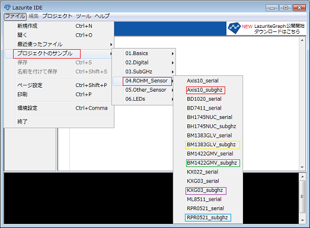
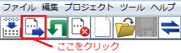
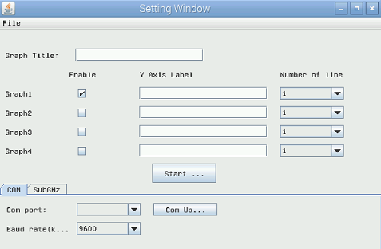

概要
特定の書式に従って送信される数値データをリアルタイムにグラフ化することができるツールです。最大で４つのグラフを同時に表示することができ、グラフのタイトルや、グラフ毎に軸の数、ラベルを任意に設定することができます。
Raspberry Pi用は920MHz無線から受信したデータのグラフ表示も可能です。

1. Raspberry Piのコンソール画面で次のコマンドを入力して、インストーラ用スクリプトをダウンロードします。
pi@raspberrypi ~ $ git clone git://github.com/LAPIS-Lazurite/LazuriteInstaller⏎
Cloning into 'LazuriteInstaller'...
remote: Counting objects: 17, done.
remote: Compressing objects: 100% (10/10), done.
remote: Total 17 (delta 4), reused 12 (delta 2), pack-reused 0
Receiving objects: 100% (17/17), done.
Resolving deltas: 100% (4/4), done.
2. LazuriteGraphのインストーラーが保存されているフォルダに移動します。
pi@raspberrypi ~ $ cd LazuriteInstaller/LazuriteGraph/⏎
3. インストーラ用スクリプトを実行します。
実行するとSTEP1～STEP10まで実行され、最後まで実行したらインストール完了です。
pi@raspberrypi ~/LazuriteInstaller/LazuriteGraph $ ./install.sh
STEP1:: get LazDriver from github
Cloning into 'LazDriver'...
remote: Counting objects: 88, done.
remote: Compressing objects: 100% (6/6), done.
......
./src/com/lapis_semi/lazurite/LazuriteGraph/ComChart.java:33: 警告: [serial] 直
列化可能なクラスComChartには、serialVersionUIDが定義されていません
public class ComChart extends JFrame implements
SerialPortEventListener,SubGHzEventListener {
^
警告26個
STEP10:: enabling SubGHz tab
Complete !!
(補足)
STEP9のコンパイルで警告が表示されますが問題はありません。LazuriteIDEのjavaのバージョンは1.6ですが、Raspberry
Pi側は1.8でバージョンが異なるために警告が表示される個所があります。
３－１． コンソール画面から実行する場合は次のコマンドを実行してください。
pi@raspberrypi ~ $ cd ~/java/LazuriteGraph/⏎
pi@raspberrypi ~/java/LazuriteGraph $ ./LazuriteGraph⏎
ファイルマネージャーを開きます。
LazuriteGraphがインストールされているフォルダを開きます。
続いて、LazuriteGraphのフォルダを開きます
LazuriteGraphをクリックして開きます。
LazuriteGraphをクリックして開きます。
『端末で実行する』を選択するとコンソール画面に出力されるログが見れます。
『実行』を選択するとコンソール画面は表示されません。
LazuriteGraphが開きました。

Lazurite IDEを開きます。
開くとダイアログが表示されるので、これを閉じます。
閉じると、新規作成画面になります。
続いて、ファイル → プロジェクトのサンプル → 04.ROHM_Sensor → Axis10_subghz（赤四角部分）の順に選択します。

※《 参照１ 》
選択すると、プログラムが読み込まれます。
続いて、プログラム内の"HOST ADDRESS"に送信元の数字を入力します。
写真の場所の数字下４桁部分を入力してください。その際、”0×”は消さないで下さい。
続いて、ツール → シリアル通信 → COM186（表示されたもの） の順に選択します。
マイコンボード通信をクリックします。

実行画面が表示されます。

これで、Lazurite IDEの操作は終了です。
続いて、３－１の起動方法に沿って、LazuriteGraphを開きます。

File → OPEN を選択します。
続いて、10axis.graphを選択して開きます。
※《 参照２ 》
SubGHzを選択し、"texAddr"に送信先の数字を入力します。
数字は写真の場所の数字16桁全てを入力してください。
入力後、startをクリックします。
10axis graphが表示されます。

※10axis graph以外を表示させる時は、《参照１》で他のプロジェクトのサンプル、《参照２》で他のグラフファイルを選択して下さい。
なお、《参照１》のプロジェクトのサンプルは、Axis10_subghz（赤）・ BM1383GLV_subghz（黄）・ BM1422GMV_subghz（緑）・ KXG03_subghz（紫）・ RPR0521_subghz（青）のみです。
LazuriteGraphはLazuriteIDEに拡張して使用するソフトウエアです。
MITライセンスに準じて配布しています。